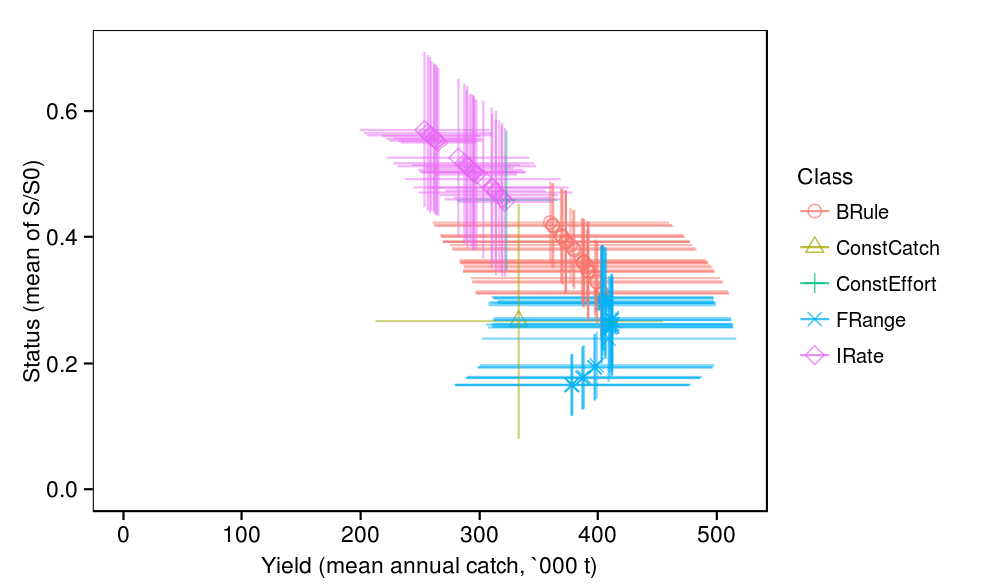
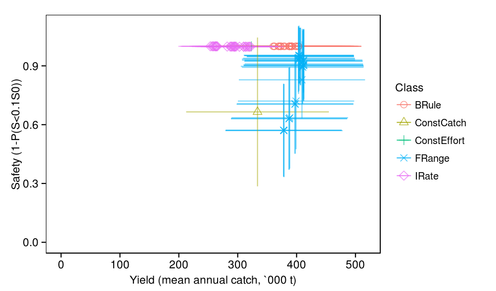
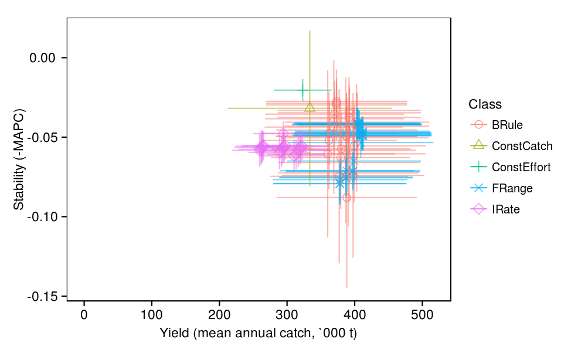
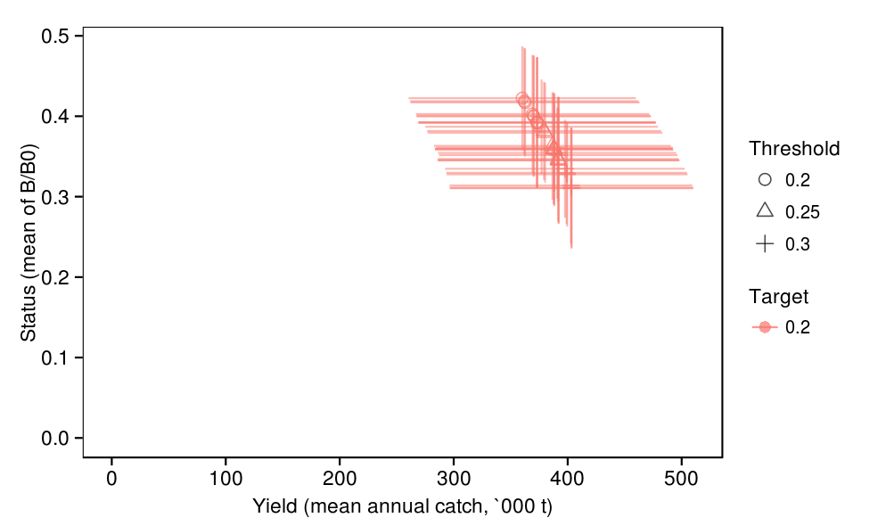
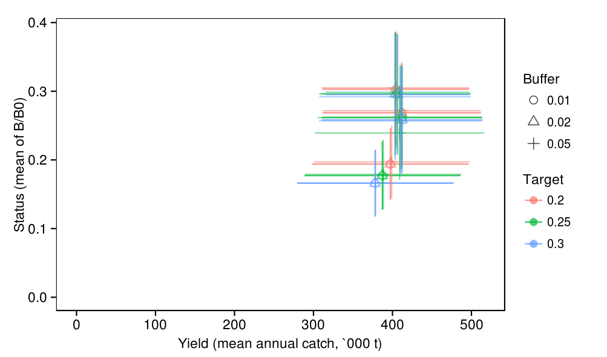
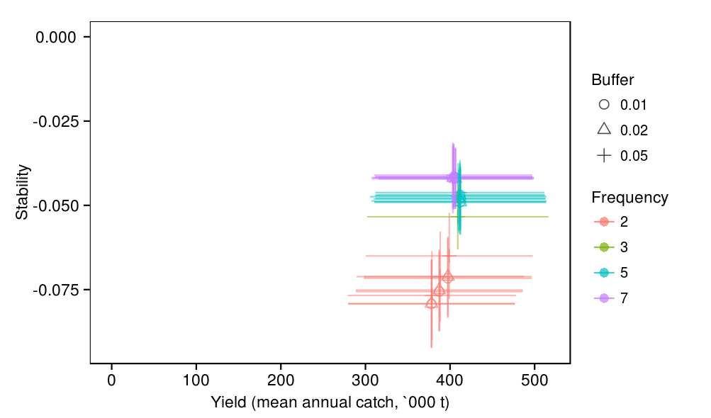
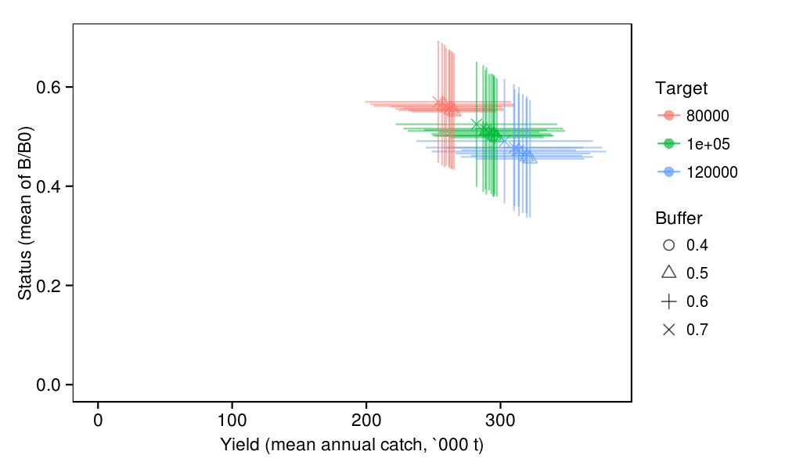

source('source.R')
1 Methods and terminology
This section provides an overview of the methods and terminology used for evaluating management procedures (i.e. management procedure evaluation, MPE). We provide examples of the types of figures and tables that are used in the following, more detailed, descriptions of evaluation results for each class of management procedure.
1.1 Evaluations and replicates
Each evaluation of a management procedure is based on a replicate. Each replicate incorporates parameter uncertainty through the random selection of a set of model parameters as well as stochastic uncertainty through the random generation of process uncertainty (e.g. recruitment variation) and observation uncertainty (e.g. CPUE error). The parameter set for a replicate is drawn from all the possible parameter sets determined from model conditioning. For each evaluation, the particular management procedure is used to determine future simulated management which affects catches, which in turn affects stock biomass and other performance measures (Figure 1).
The primary purpose of MPE is not to provide forecats of catch, biomass or other performance measures. Rather, it is to compare the performance, relative to management objectives, of alternative candidate management procedures. Thus, for each replicate, each of the candidate management procedures is evaluated (Figure 2). This allows us to compare the performance of alternative MPs under exactly the same set of assumptions. Notice in (Figure 2) that the biomass trajectories resulting from using alternative MPs often fluctuate in parallel. This is due to the same recruitment variations being used for each evaluation.
temp <- subset(track,quarter==0 & procedure %in% c(-1,1) & replicate==1) p1 <- ggplot(temp,aes(x=year,y=catches_total/1e3)) + geom_line(aes(group=procedure),colour='black',alpha=0.3) + geom_vline(x=2014.8,linetype=2) + geom_hline(v=0,alpha=0) + labs(x="Year",y="Catch (quarterly,kt)") + theme(legend.position='none') p2 <- ggplot(temp,aes(x=year,y=biomass_spawners_overall/1e3)) + geom_line(aes(group=procedure),colour='black',alpha=0.3) + geom_vline(x=2014.8,linetype=2) + geom_hline(v=0,alpha=0) + labs(x="Year",y="Biomass (spawners,kt)") + theme(legend.position='none') multiplot(p1,p2)

temp <- subset(track,quarter==0 & replicate==1) p1 <- ggplot(temp,aes(x=year,y=catches_total/1e3)) + geom_line(aes(colour=procedure),alpha=0.3) + geom_vline(x=2014.8,linetype=2) + geom_hline(v=0,alpha=0) + labs(x="Year",y="Catch (quarterly,kt)") + theme(legend.position='none') p2 <- ggplot(temp,aes(x=year,y=biomass_spawners_overall/1e3)) + geom_line(aes(colour=procedure),alpha=0.3) + geom_vline(x=2014.8,linetype=2) + geom_hline(v=0,alpha=0) + labs(x="Year",y="Biomass (spawners,kt)") + theme(legend.position='none') multiplot(p1,p2)

To be able to assess and compare the robustness of management procedures to uncertainty it is necessary to run evaluations for many replicates. Figure 3 shows one hundred evaluations, each based on a different replicate, for a single management procedure. When presenting the trajectories from muliple evaluations, it is usually easier to ascertain both the central tendency and the variability of trajectories using quantile ribbons (Figure 4). The ribbons show the bands where 50%, 80% and 90% of trajectories fall. In addition, to indicate the expected inter-annual variability, the trajectories from three example replicates are shown separately. These example replicates were chosen as those that produced the 20th (red), 50th (blue) and 80th (green) percentile of average biomass of spawners under the constant effort management procedure. In all these plots the same three example replicates are used for ease of comparison. Figure 4 shows the same plot for a management procedure which produces higher catches but consequently, declining stock status.
temp <- subset(track,quarter==0 & procedure %in% c(-1,1)) p1 <- ggplot(temp,aes(x=year,y=catches_total/1e3)) + geom_line(aes(colour=replicate),alpha=0.3) + geom_vline(x=2014.8,linetype=2) + geom_hline(v=0,alpha=0) + labs(x="Year",y="Catch (quarterly,kt)") + theme(legend.position='none') p2 <- ggplot(temp,aes(x=year,y=biomass_status)) + geom_line(aes(colour=replicate),alpha=0.3) + geom_vline(x=2014.8,linetype=2) + geom_hline(v=0,alpha=0) + labs(x="Year",y="Status (spawners,B/B0)") + theme(legend.position='none') multiplot(p1,p2)

temp <- subset(track,quarter==3 & procedure %in% c(-1,1)) p1 <- plot_ribbon(temp,y=quote(catches_total/1e3),ylab='Catch (last quarter,kt)') p2 <- plot_ribbon(temp,y=quote(biomass_status),ylab='Status (B/B0)') multiplot(p1,p2)

temp <- subset(track,quarter==3 & procedure %in% c(-1,3)) p1 <- plot_ribbon(temp,y=quote(catches_total/1e3),ylab='Catch (last quarter,kt)') p2 <- plot_ribbon(temp,y=quote(biomass_status),ylab='Status (B/B0)') multiplot(p1,p2)

1.2 Performance measures, performance statistics and management objectives
A performance measure is any model variable that is used as a basis for a performance statistic. That is, a performance statistic, summarises a performance measure over the evaluation period, in this case 25 years.
The main performance measures used are catches , relative catch rates , and mature biomass . For convenience, where the performance measure represents a summation across all possible model dimensions (e.g. region, method) for the variable we use the bar annotation in mathematical notation. e.g.
We have grouped performance statistics according to broad categories of management objectives : yield, abundance, stability, status and safety Table 1. We use these labels in the following summaries and for each category focus on the first performance statistic. For example, when presenting evaluation results relating to the stability management objective we mostly summarise the MAPC performance statistic. In accordance with the desire to maximise these objectives we present "positive" versions of each of performance statistics in the following figures and tables. For example, rather than presenting a "risk" related statistic such as the probability of being below 0.1S0 we use the "safety" related statistic, the probability of being above 0.1S0.
Figure 6 provides an overview of the distribution of each performance measure.
| Performance statistic | Performance measure | Summary statistic |
|---|---|---|
| Yield | ||
| Mean catch | Mean over years | |
| Mean purse siene catch | Mean over years | |
| Mean pole and line catch | Mean over years | |
| Mean gillnet catch | Mean over years | |
| Abundance | ||
| Mean relative catch rates for western purse siene | Geometric mean over years | |
| Mean relative catch rates for Maldive pole and line | Geometric mean over years | |
| Mean relative catch rates for eastern gillnet | Geometric mean over years | |
| Stability | ||
| Mean absolute proportional change in catch (MAPC; also known as average annual variation, AAV) | Mean over years | |
| Variance in catch | Variance over years | |
| Probability of shutdown | Proportion of years that | |
| Status | ||
| Mean mature biomass relative to pristine | Mean over years | |
| Mean mature biomass relative to | Geometric mean over years | |
| Mean fishing mortality relative to | Geometric mean over years | |
| Safety | ||
| Probability of mature biomass falling below 10% of | Proportion of years that | |
| Probability of mature biomass falling below 20% of | Proportion of years that |
print( ggplot(melt(perfs[,stats]),aes(x=value)) + geom_density(fill='grey') + facet_wrap(~variable,scales='free') )

2 Results
2.1 Comparison of classes of management procedures
In this section we provide an overview of the performance of the three classes of management procedures evaluated. This section is also used to introduce the summary figures and tables used in following sections.
The following figures illustrate the trade offs between pairs of performance statistics:
- yield v status Figure 7
- yield v safety #figure-yield-safety-all-all
- yield v stability #figure-yield-safety-all-all
- yield v abundance Figure 10
plot_tradeoff( perfs, x = list(yield='Yield (mean annual catch, `000 t)'), y = list(status='Status (mean of S/S0)'), colour = list(class='Class'), shape = list(class='Class') )
plot_tradeoff( perfs, x = list(yield='Yield (mean annual catch, `000 t)'), y = list(safety10='Safety (1-P(S<0.1S0))'), colour = list(class='Class'), shape = list(class='Class') )
plot_tradeoff( perfs, x = list(yield='Yield (mean annual catch, `000 t)'), y = list(stability='Stability (-MAPC)'), colour = list(class='Class'), shape = list(class='Class') )
There is an unsurprising performance trade off between yield and abundance (Figure 10). In general, higher catches lead to higher exploitation rates and reduced biomass which in turn leads to reduced catch rates.
Generally there is a high correlation between the abundance performance statistics for each of the main fisheries (Figure 11). Note however, that some MPs, particularly those resulting in overall higher abundance do result in higher relative abundance for M-PL and E-GN. This is most likely a result of the lower exploitation rates under these MPs which in turn creates an increase in the biomass of larger sized skipjack which are more fully selected by these fisheries.
plot_tradeoff( perfs, x = list(yield='Yield (mean annual catch, `000 t)'), y = list(cpue_m_pl='Abundance M-PL'), colour = list(class='Class'), shape = list(class='Class') )

p1 = ggplot(perfs,aes(x=cpue_w_ps,y=cpue_m_pl,colour=class,shape=class)) + geom_point(size=3) + geom_abline(linetype=3) + labs(x='W-PS CPUE',y='M-PL CPUE') p2 = ggplot(perfs,aes(x=cpue_m_pl,y=cpue_e_gn,colour=class,shape=class)) + geom_point(size=3) + geom_abline(linetype=3) + labs(x='M-PL CPUE',y='E-GN CPUE') multiplot(p1,p2)

2.2 Performance of the BRule class
plot_tradeoff( subset(perfs,class=="BRule"), x = list(yield='Yield (mean annual catch, `000 t)'), y = list(status='Status (mean of B/B0)'), colour = list(p2='Target'), shape = list(p3='Threshold') )
2.3 Performance of the FRange class
plot_tradeoff( subset(perfs,class=="FRange"), x = list(yield='Yield (mean annual catch, `000 t)'), y = list(status='Status (mean of B/B0)'), colour = list(p3='Target'), shape = list(p4='Buffer') )
plot_tradeoff( subset(perfs,class=="FRange"), x = list(yield='Yield (mean annual catch, `000 t)'), y = list(stability='Stability'), colour = list(p1='Frequency'), shape = list(p4='Buffer') )
2.4 Performance of the IRate class
plot_tradeoff( subset(perfs,class=="IRate"), x = list(yield='Yield (mean annual catch, `000 t)'), y = list(status='Status (mean of B/B0)'), colour = list(p3='Target'), shape = list(p4='Buffer') )
Analysis of sensitivity
par <- 'movement_stay.value' values <- samples[,par] # Calculate quantiles for parameter quantiles <- quantile(values,p=seq(0,1,0.1)) # Cut performance <- subset(performances,procedure==3) performance$quantile <- as.integer(cut(values,quantiles)) sensitivity <- ddply(performance,.(quantile),summarise, yield = mean(catches_total), status = mean(status_mean) ) ggplot(sensitivity) + geom_line(aes(x=quantile,y=status))